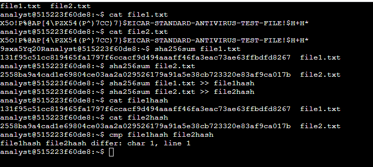

Hashing and File Comparison Report
Introduction
As a security analyst, ensuring data integrity is paramount. In this lab, we delved into the manual generation and comparison of hash values to identify differences between two files—file1.txt and
file2.txt.
Task 1: Generating Hashes
We initiated by displaying the contents of both files and then leveraged the sha256sum command to compute hash values for each file. Although the file contents appeared identical with the 'cat' command, hashing revealed potential differences. Results:
⦁ Hash for file1.txt:
131f95c51cc819465fa1797f6ccacf9d494aaaff46fa3eac73ae63ffbdfd8267
⦁ Hash for file2.txt:
2558ba9a4cad1e69804ce03aa2a029526179a91a5e38cb723320e83af9ca017b
Task 2: Comparing Hashes
To discern differences, we wrote the hash values to separate files—file1hash and file2hash. Subsequently, using the cmp command, we pinpointed the precise byte and line where the hash values diverged.
Results:
⦁ Differences detected at char1, line 1
